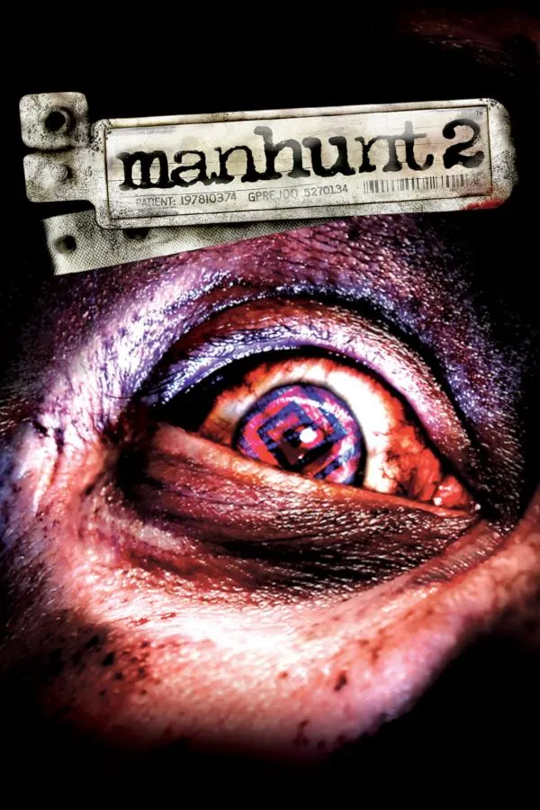
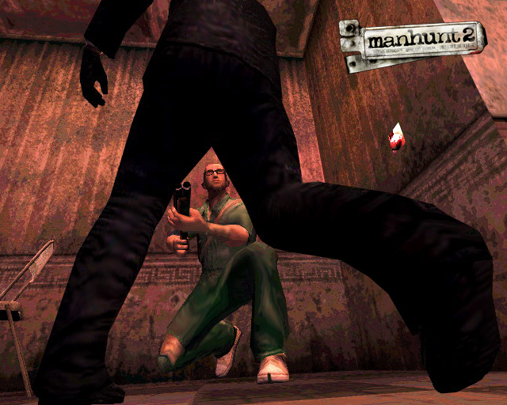
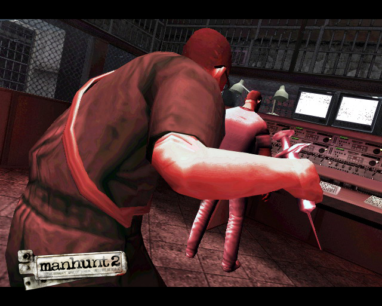
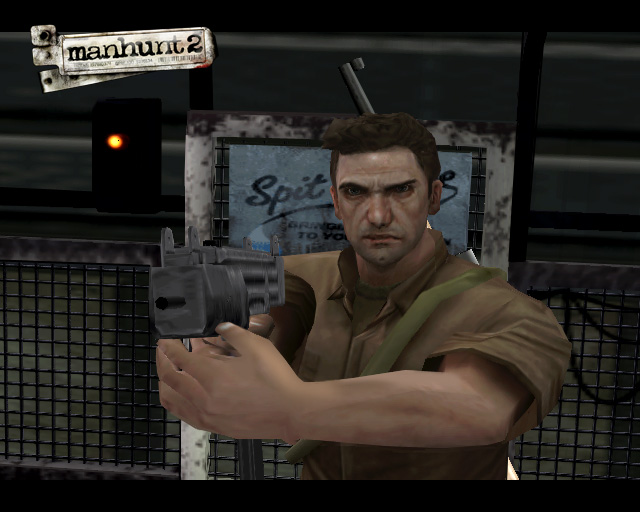
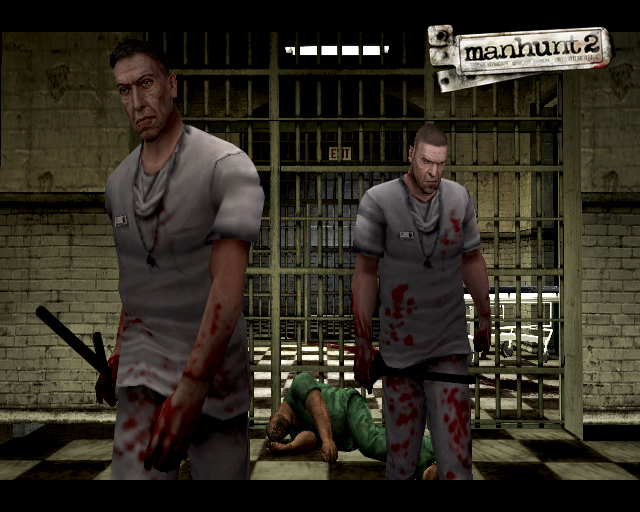

Manhunt 2

Descripción
Manhunt 2 nos presenta a Daniel Lamb, un hombre que despierta en un manicomio después de que un experimento secreto haya salido mal. Sin recordar quién es ni cómo ha llegado hasta allí, tendrá que encontrar la forma de escapar mientras intenta descubrir la verdad sobre su pasado.
Durante su huida contará con la ayuda de Leo Kasper, otro superviviente del experimento, mientras ambos son perseguidos por una misteriosa organización conocida como el Proyecto Pickman, que hará todo lo posible para silenciarlos.
Como en la primera entrega, tendremos que utilizar el sigilo, escondernos y aprovechar el entorno para acabar con nuestros perseguidores. Todo ello acompañado de una ambientación oscura y una historia cargada de violencia, paranoia y misterio.
Capturas del videojuego




Información del videojuego
| Desarrollador | Plataforma | Fecha de lanzamiento |
|---|---|---|
| Rockstar London, Rockstar Toronto | PC, Wii, PS2, PSP | 29 de octubre de 2007 |